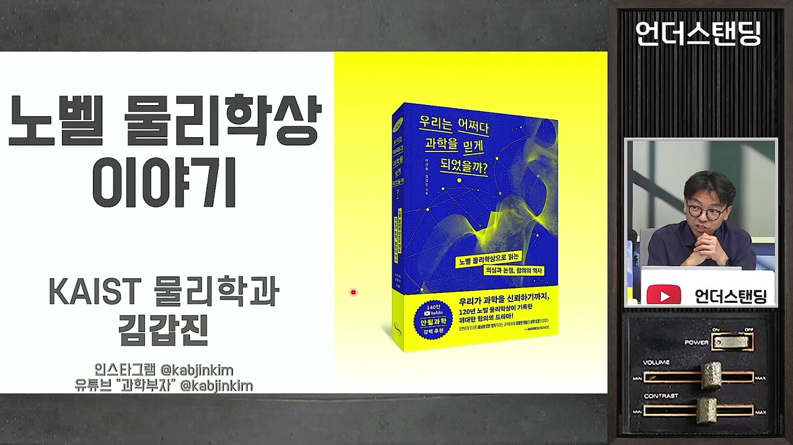
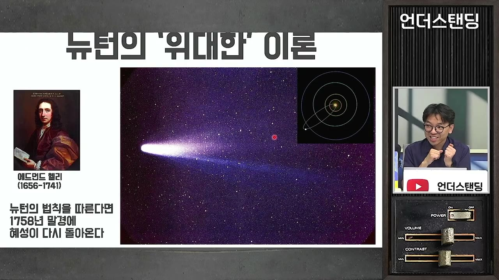
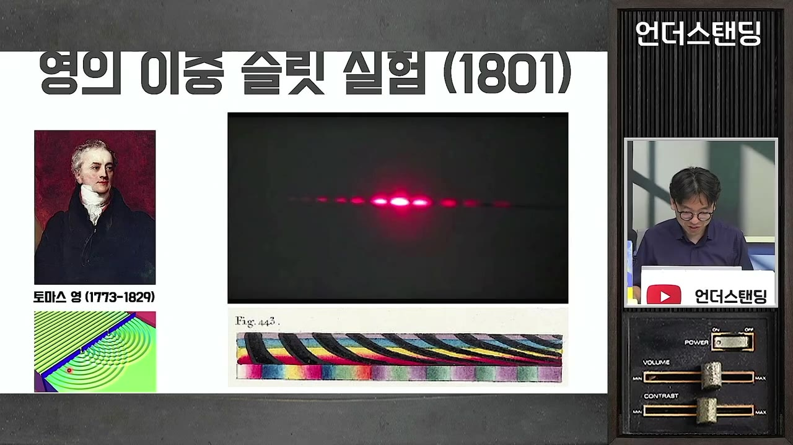
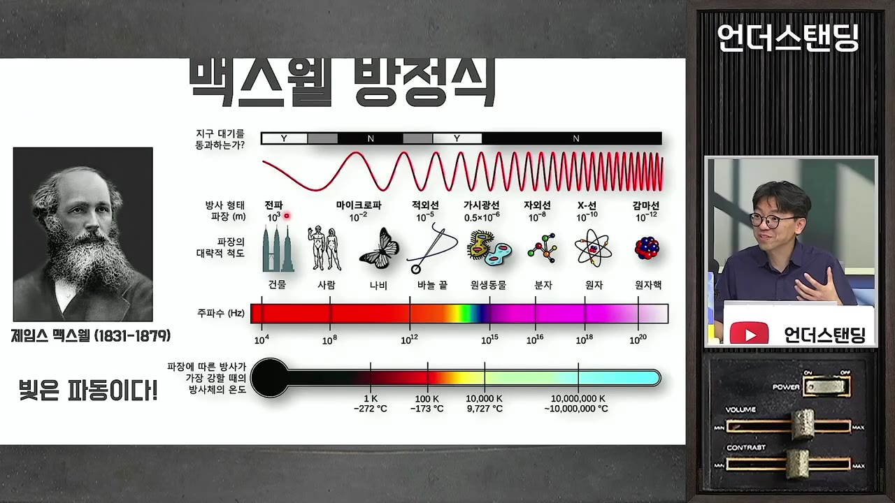
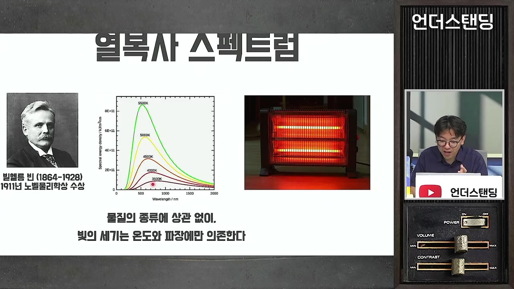
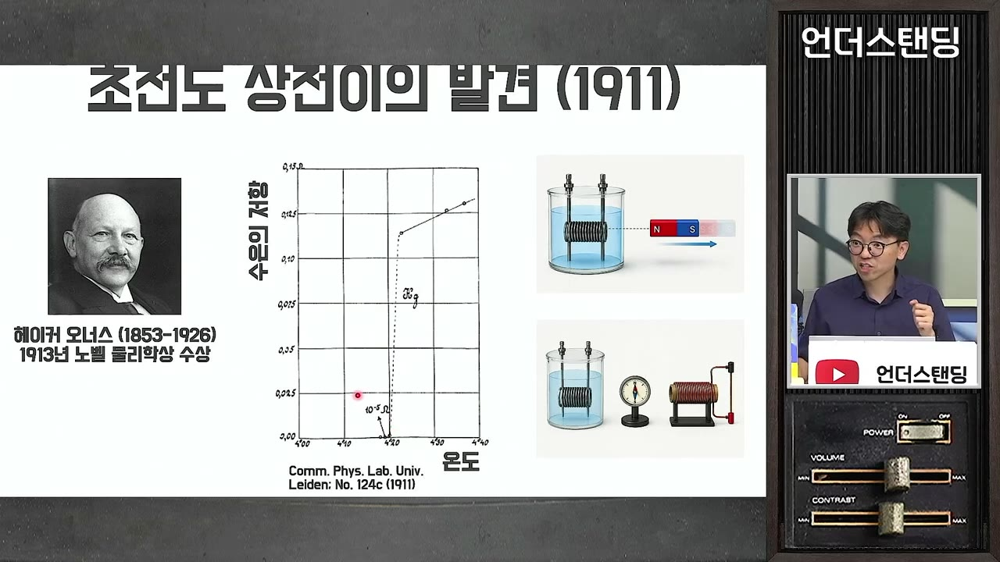
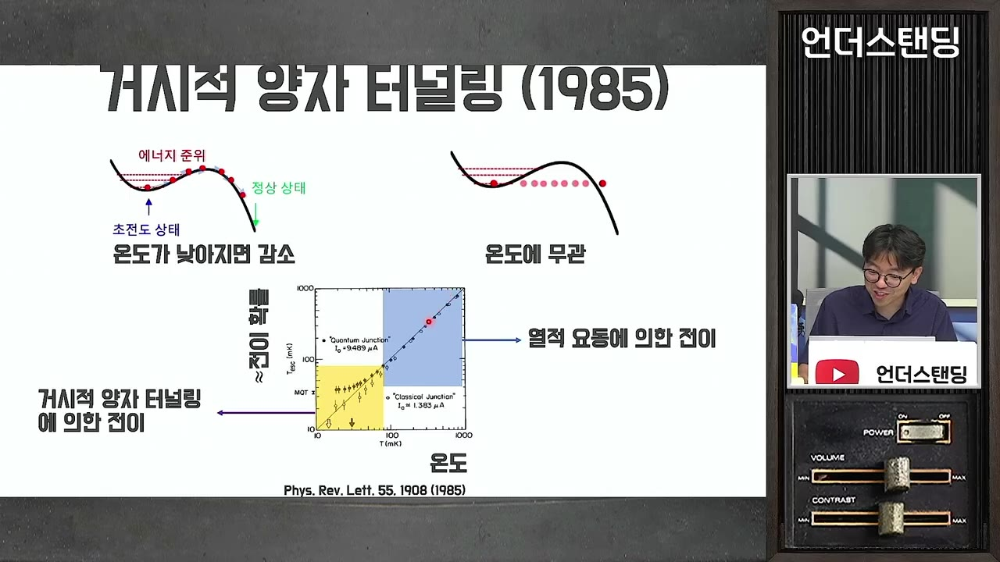

[김갑진의 양자물리학 몰아보기] 아인슈타인이 뒤집은 양자역학의 탄생부터 '저항 0' 초전도체. 양자컴퓨터의 비밀까지 (카이스트 물리학과 김갑진 교수)
▶ 원본 영상 보기한눈에 보기
- 이 영상은 노벨 물리학상 이야기를 통해 "과학은 진리가 아니라 의심과 실험 끝에 이뤄낸 합의"라는 점을 보여 준다.
- 첫 질문 "빛은 알갱이인가 파동인가?"는 뉴턴(알갱이) → 영·맥스웰(파동) → 플랑크·아인슈타인·콤프턴(다시 알갱이)으로 이어지고, 결론은 "둘 다"(양자역학의 상보성)다.
- 둘째 질문 "금속을 차갑게 하면 저항은 어떻게 될까?"는 오네스의 초전도 발견, 46년 뒤 BCS 이론(쿠퍼쌍), 조셉슨 접합, 1986년 고온 초전도체로 이어진다.
- 초전도 회로 전체가 하나의 양자 상태로 터널링한다는 1985년 실험이 구글 양자컴퓨터(초전도 큐비트)의 토대가 됐다.
- 과학자들은 서로 다른 설명을 내놓고, 설명에서 나온 예측을 실험으로 검증하며 합의에 이른다.
이런 분께 도움이 됩니다
- 양자역학·초전도·양자컴퓨터가 "어떤 질문에서 출발했는지" 흐름으로 알고 싶은 분
- 수식 없이 노벨상 이야기로 과학의 작동 방식을 이해하고 싶은 분 (김갑진 KAIST 교수의 책 『우리는 어쩌다 과학을 믿게 되었을까』 내용)
핵심 내용
과학은 진리가 아니라 합의다
- 과학은 진리를 말하는 게 아니라 "가능한 설명"을 내놓고, 과학자들이 싸우다가 움직일 수 없는 증거가 쌓이면 합의한다. 그 합의에 노벨 물리학상을 준다. (2:12)
- 천동설에서 지동설로 넘어가는 데도 증거가 계속 쌓여서야 받아들여졌다.
- 100℃에서 물이 끓는 것도 과학자는 "온도계가 잘못됐을 것"이라며 끝까지 의심하고, 더 이상 의심할 수 없을 때 믿는다.
- 새 이론이 나와도 옛 이론이 완전히 틀리는 건 아니다. 상대성이론이 나와도 뉴턴 역학은 여전히 맞는 영역이 있다.
- 과학은 언제든 바뀔 수 있다. 100년 뒤 지금의 설명이 틀렸다고 증명될 수도 있다.
💡 과학이 믿을 만한 이유는 "진리라서"가 아니라 의심과 검증을 끝까지 거쳤기 때문이다.

뉴턴이 신뢰를 얻은 이유와 "빛은 알갱이"
- 뉴턴은 두 식(중력, F=ma)으로 우주의 운동을 설명했다.
- 핼리는 뉴턴 법칙으로 혜성이 76년 뒤 다시 온다고 예측했고, 자신이 죽은 뒤인 1758년 12월에 실제로 왔다. (자막상 사망 연도 표기는 불분명)
- 천왕성 궤도가 계산과 안 맞자 바깥에 다른 천체가 있다고 계산했고, 그 자리에서 해왕성이 발견됐다.
- 카벤디시는 두 질량 사이의 미세한 중력을 거울과 빛으로 증폭해 측정했다. 이렇게 G를 알면 지구 질량이 나오고, 이어서 태양과 행성 질량도 알 수 있다.
- 뉴턴은 "빛은 힘을 안 주면 직진하는 알갱이"라고 주장했다. 프리즘으로 색이 갈라지는 걸 보고 "색은 물질이 아니라 빛의 특성"이라고도 봤다. (9:45)
💡 "미래를 예측하고 없던 걸 찾아낸" 뉴턴의 권위가 너무 커서 그의 빛 이론에 반대하기가 어려웠다.

빛의 정체를 둘러싼 논쟁 타임라인
🔁 빛은 알갱이인가 파동인가
- 뉴턴: 알갱이
- 영: 파동
- 맥스웰: 전자기파
- 플랑크: 에너지가 띄엄띄엄
- 아인슈타인: 광전효과
- 밀리컨: 검증
- 콤프턴·보테: 산란
- 영은 "나도 뉴턴을 존경하지만 그가 무결하다고 믿을 이유는 없다"고 했다. (19:10)
- 파동이라면 간섭무늬가 생긴다. 알갱이라면 구멍 두 개 뒤에 점이 두 군데만 생겨야 한다.


파동으로는 설명 안 되는 실험들 (알갱이론의 근거)
- 흑체복사: 물질과 상관없이 온도만 같으면 빛의 스펙트럼이 같다. 이를 별의 온도 측정에 쓴다.
- 빈의 식은 피크 오른쪽이, 레일리의 식은 피크 왼쪽이 안 맞았다.
- 플랑크는 "에너지가 1, 2, 3처럼 띄엄띄엄 있다"고 가정해 계산한 뒤 간격을 0으로 보내는 방식으로 전체를 정확히 맞췄다. 연속이면 설명이 안 됐다. (24:46)
- 광전효과(레나르트): 금속에 빛을 쏘면 전자가 튀어나온다.
- 빛을 세게(밝게) 쏘면 전자 수만 늘고 속도는 그대로다.
- 파장(색)을 바꾸면 달라진다. 보라색은 빠르게 튀고, 빨간색은 아무리 세도 안 나온다.
- 아인슈타인은 "빛은 진동수에 비례하는 에너지를 가진 알갱이"라고 설명했고, 진동수와 전자 에너지의 관계는 직선으로 나온다고 예측했다. (31:08)
- 밀리컨의 검증: 아인슈타인이 틀렸음을 보이려고 10년을 실험했는데 예측과 정확히 일치했다. 직선의 기울기가 플랑크 상수 h다. (32:43)
- 콤프턴 산란: 파란색(X선)을 물질에 쏘면 더 긴 파장이 나온다. 당구공 충돌로 에너지를 잃는 것처럼 알갱이로 해석해야 설명된다.
- BKS 이론(보어·크라머스·슬레이터)은 파동을 지키려고 "에너지 보존을 포기해도 좋다"고까지 했다.
- 보테와 가이거는 튕겨 나온 전자와 빛을 동시에 측정해 알갱이 충돌임을 직접 확인했고, BKS는 틀렸다고 인정했다.
- 영의 간섭 실험은 "무조건 파동", 콤프턴은 "무조건 알갱이"여야 설명된다.

결론: 상보성 — 알갱이이면서 파동
- 빛(그리고 모든 물질)은 알갱이이면서 파동이다. 보어의 "상보성"은 서로 배타적인 두 관점이 함께 있어야 세상을 이해할 수 있다는 철학이다. (39:51)
- 슬릿을 통과할 때는 파동 성질이, 충돌할 때는 알갱이 성질이 나타난다. 어느 쪽으로 보이는지는 "관측하는 순간" 정해진다는 것이 현재의 해석이다.
- 설명하기 어려워서 이렇게 말하는 것일 뿐 진리는 아니다. 100년 뒤 다른 설명이 나올 수도 있다. (42:50)
둘째 질문: 온도를 낮추면 저항은?
- 드루드는 전자가 원자와 부딪혀 속도가 일정해지는 것을 저항이라고 설명했다. 빗방울의 종단속도와 같은 원리다. (45:25)
- 켈빈은 "온도가 내려가면 전자가 얼어붙어 저항이 커진다", 오네스는 "원자가 덜 떨려서 저항이 줄어든다"고 예측했다.
- 오네스가 헬륨 액화 기술로 직접 실험했다. 저항은 점점 줄다가 약 4.2K에서 갑자기 뚝 떨어졌다. (측정 오차 때문에 "0"이 아니라 10⁻⁵Ω 이하라고 보고했다.) (48:08)
- 이것이 초전도 현상의 발견이고, 발견 2년 뒤 노벨상을 받았다. 이 온도(약 -269℃)까지 내릴 수 있는 사람은 당시 오네스뿐이었다.
- 진짜 0인지 확인하려고 납 코일에 전류를 만들고 자기장을 며칠간 지켜봤다. 전류는 헬륨이 떨어져 냉각이 끊길 때까지 멈추지 않았다. 그래도 그는 "1억분의 1 이하"라고만 표현했다. (49:35)

초전도의 설명: BCS 이론
- 설명에 46년이 걸렸다. 양자역학이 정립되고 나서야 가능했기 때문이다. (51:27)
- 바딘·쿠퍼·슈리퍼(BCS)는 전자 두 개가 쌍(쿠퍼쌍)으로 다닌다고 설명했다.
- 쌍이 되면 보존(boson)이 되어 집단 상태가 가능하다.
- 한 전자가 지나가면 주변 양이온이 끌려와 모이고, 뒤따르는 전자가 그 자리의 인력을 느껴 짝을 이룬다. 마이너스끼리도 쌍이 될 수 있다.
- 전자는 파동이어서 모든 쌍의 결이 맞으면 장애물에 걸리지 않고 지나간다.
- 이 이론은 두 가지를 예측했다. 쌍을 깨는 결합에너지가 있고, 25K 이상에서는 초전도가 불가능하다.
- 예이버(자막상 "에베이")가 터널링 실험으로 결합에너지를 확인했다. 에사키의 반도체 터널링 발견이 토대였다.
- 조셉슨은 22살 대학생 때 "양쪽 다 초전도체면 쌍이 통째로 넘어갈 수도 있다"고 예측했다. 바딘은 말이 안 된다고 했지만 이듬해 벨 연구소가 실험으로 증명했고, 조셉슨은 노벨상을 받았다.
25K 한계를 깬 고온 초전도체 (1986)
- 마티아스는 100개쯤 새 초전도체를 찾으며 "산소·자성·절연체·이론물리학자를 피하라"는 규칙을 세웠다. 열쇠를 가로등 아래서만 찾는 사람 이야기로 새 영역 탐색의 중요성을 말했다. (1:00:38)
- 1986년 베드노르츠와 뮐러(자막상 표기 불분명)가 35K에서 초전도를 발견하고, 몇 달 뒤 95K(액체질소로 가능한 온도)가 나왔다. 이듬해 노벨상을 받았다.
- 물질은 란타늄·바륨·구리 산화물로, 산소가 있고 자성이 있는 절연체였다. 마티아스의 규칙 전부를 어겼다. (1:02:32)
- BCS의 25K 한계는 순수 물질에서는 맞다. 하지만 이 물질이 왜 초전도가 되는지는 지금도 아무도 설명하지 못한다. 설명하면 노벨상 감이다. (1:03:27)
거시적 양자 터널링과 양자컴퓨터
🔁 초전도 질문에서 양자컴퓨터까지
- 쌍으로 결이 맞는 전자
- 레깃의 예측
- 1985 실험
- 온도가 평평해짐
- 큰 회로가 인공 원자
- 구글 양자컴퓨터
- 1쌍으로 결이 맞는 전자
초전도체 안의 모든 전자가 하나의 양자 상태
- 2레깃의 예측
10²³개 규모의 전체가 한 번에 터널링할 수 있다고 계산
- 31985 실험
클라크 교수와 박사후연구원, 학생 세 명이 온도를 mK 이하로 낮춤
- 4온도가 평평해짐
열로 넘는 게 아니라 터널로 뚫고 간다는 증거
- 5큰 회로가 인공 원자
칩 위 초전도 회로를 큐비트로 사용
- 6구글 양자컴퓨터
학생이던 마티니스(자막상 "마티리스")가 구글에서 개발, 2019 양자 우월성 논문
- 이 실험 덕분에 원자 단위가 아닌 칩 크기 회로에서도 양자 현상을 볼 수 있게 됐다. 만들기도 쉽고 큐비트를 늘리기도 쉽다.
💡 "저항이 어떻게 될까?"라는 단순한 질문이 40년 뒤 양자컴퓨터로 이어졌다.

양자역학이 이미 쓰이는 곳
- 반도체: 전자가 파동이어서 터널링이 일어난다. 컴퓨터 칩(CMOS)이 이를 활용한다. (1:11:40)
- 레이저: 원자 에너지 준위가 딱 정해져 있어 똑같은 빛이 계속 나온다. 결을 맞춘 빛이라 달까지도 쏜다.
노벨상을 받는 사람의 특징
- 질문은 의외로 단순하다. 예를 들어 "하드디스크 소자에 전류를 흘려 저항을 재보자"는 생각 하나가 노벨상이 됐다. (1:16:48)
- 대부분 박사후연구원·학생의 새 아이디어로 시작한다(쿠퍼쌍도 박사후연구원 아이디어였다). 교수는 중요한 문제를 알아보는 안목과 경험을 맡는다.
- 공부할수록 "나도 생각할 수 있었는데"라는 경우와 "수학을 따라가지 못해 이해 못 하는" 경우가 있다고 한다.
기억할 숫자·인용
| 항목 | 내용 |
|---|---|
| 핼리혜성 | 76년 주기, 1758년 12월 재출현, 다음은 2061~62년경 |
| 초전도 발견 | 약 4.2K(-269℃), 오네스, 발견 2년 후 노벨상 |
| BCS 이론 | 발견 후 46년 만에 설명(1957) |
| BCS 한계 | 25K 이상 불가 → 1986년 35K → 95K |
| 조셉슨 | 22살에 예측, 노벨상 |
| 거시 터널링 실험 | 1985년, 구글 양자 우월성 논문은 2019년 |
| 보어 | "한 가지 관점으로는 세상이 이해되지 않는다" |
| 영 | "뉴턴이 무결하다고 믿을 이유는 없다" |
생각해볼 점
- 강연 특성상 방정식·세부 실험 조건은 단순화돼 있다(예: 광전효과는 "진동수가 높을수록 에너지가 크다"는 식의 선형 관계). 정확한 내용은 책이나 교과서로 확인해야 한다.
- "관측하는 순간 파동/알갱이가 정해진다"는 해석은 여러 해석 중 하나이며, 교수 스스로도 "진리가 아니다"라고 밝혔다.
- 고유명사와 연도는 자막 인식 오류가 있을 수 있어(예: 예이버, 베드노르츠, 마티니스) 인용 전에 검색으로 확인하는 것이 좋다.
바로 해볼 일
- 레이저 포인터를 머리카락에 비춰 벽에 생기는 간섭무늬를 직접 보기
- "광전효과", "쿠퍼쌍", "조셉슨 접합" 중 하나를 골라 공식 자료로 10분 더 읽어 보기
- 책 『우리는 어쩌다 과학을 믿게 되었을까』 목차 확인하기